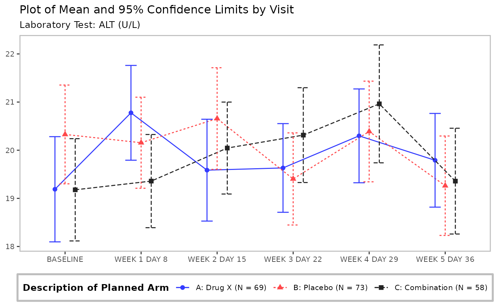
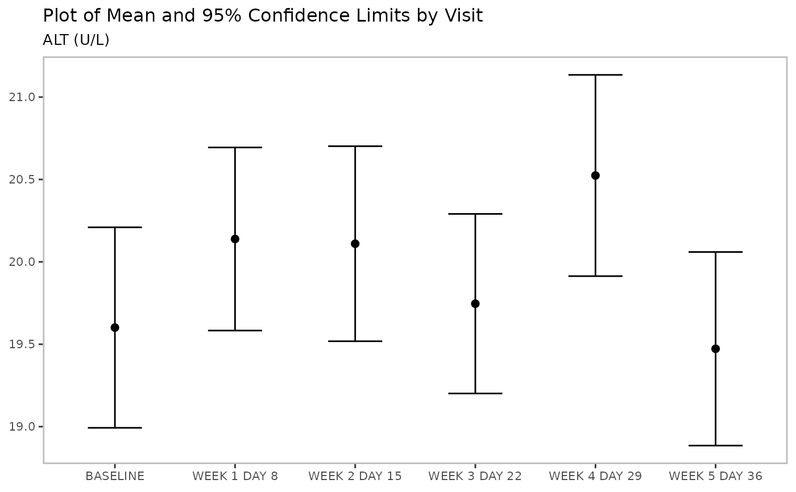
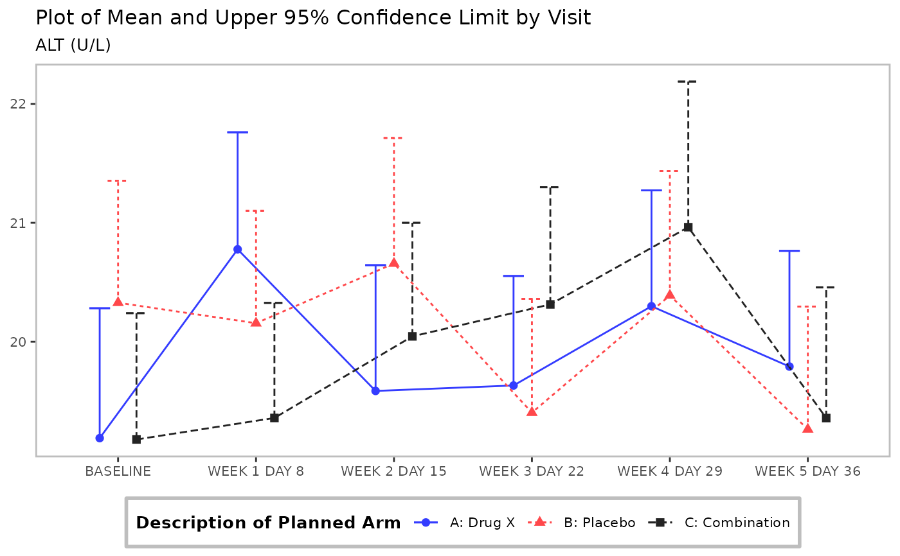
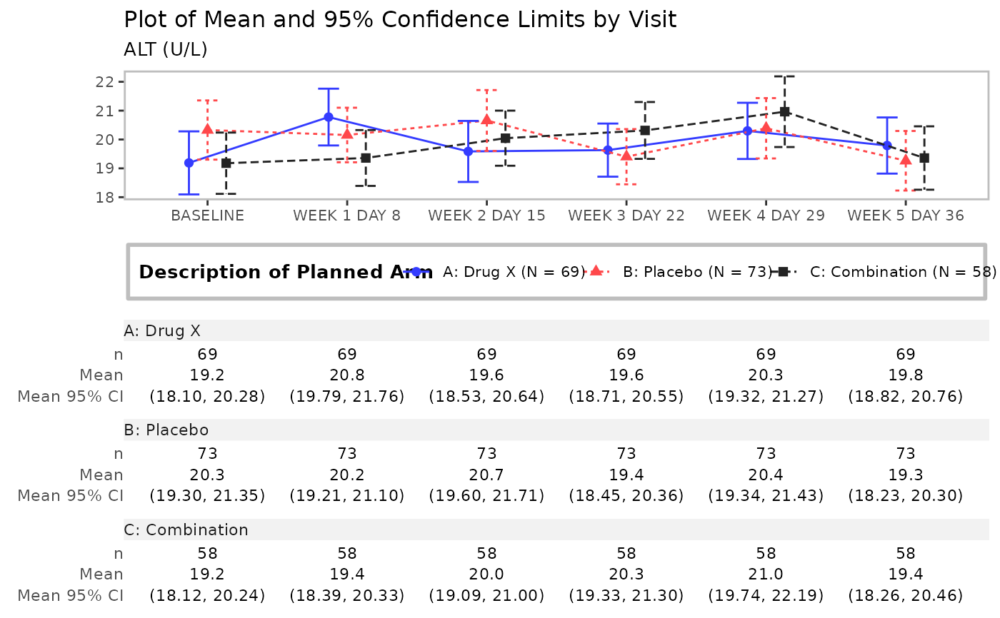
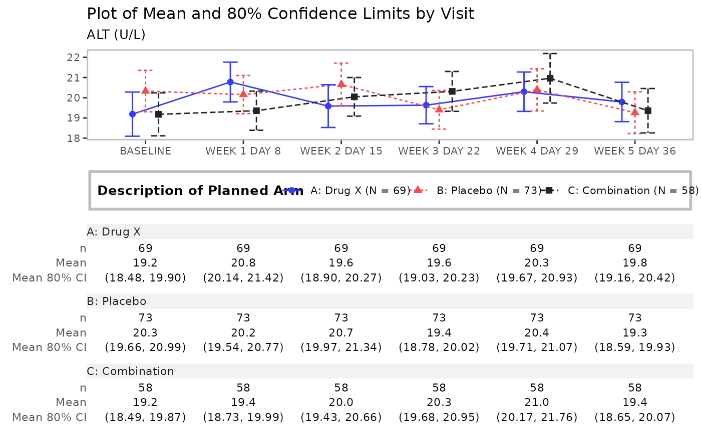
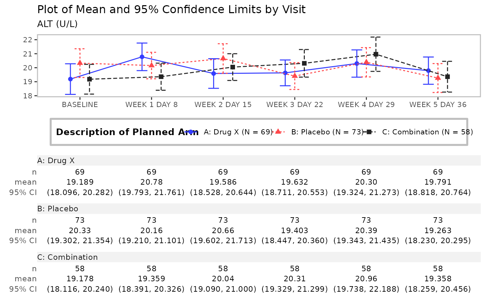
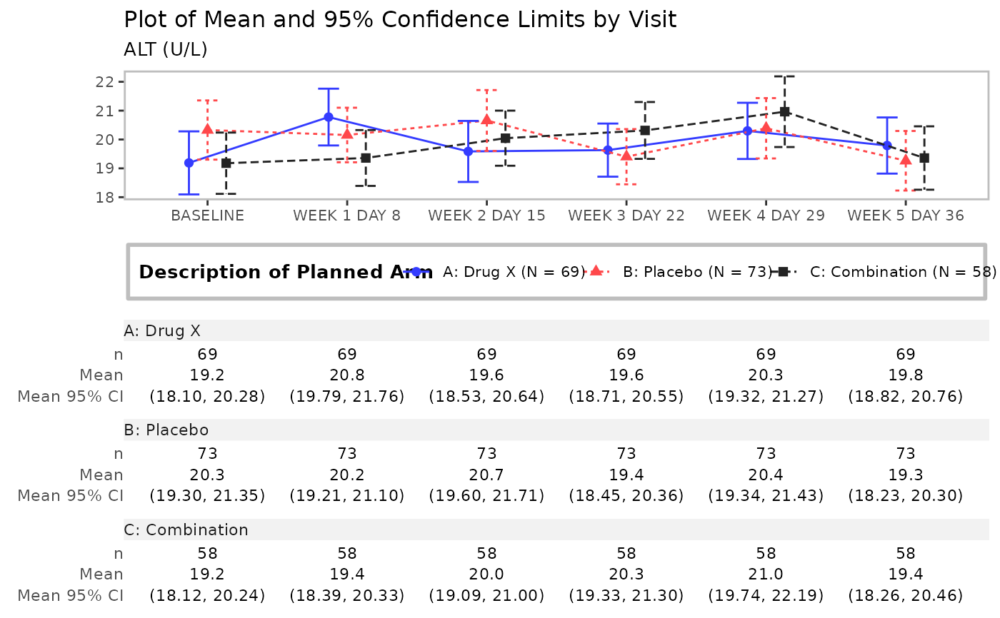
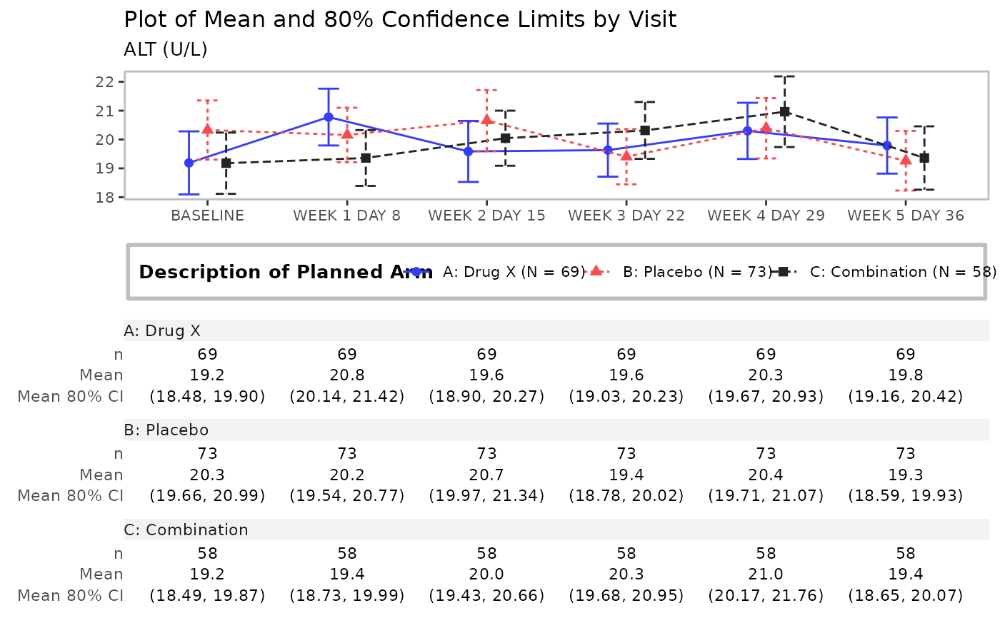
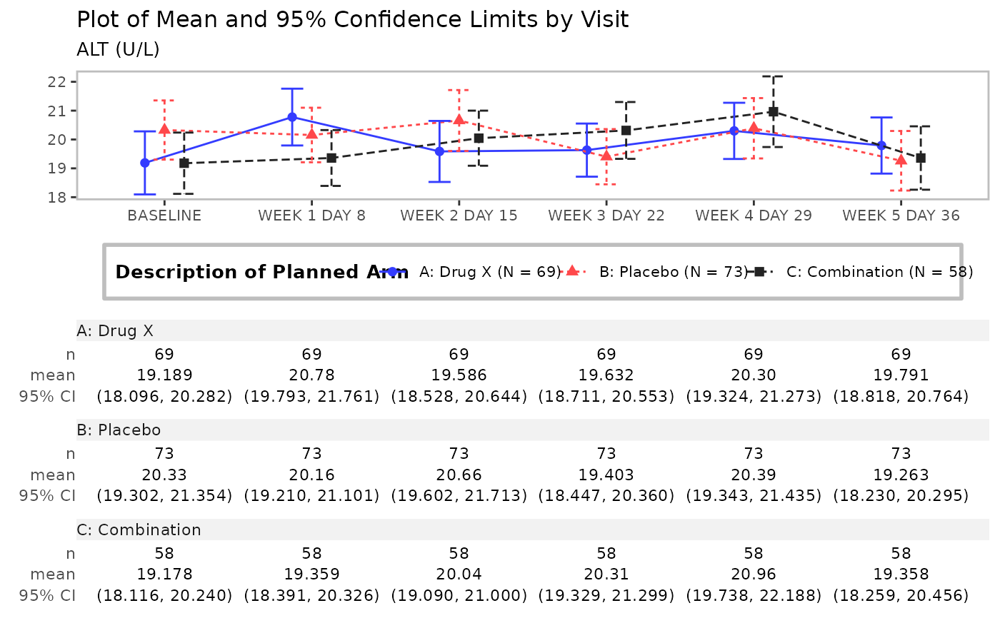

![[Stable]](figures/lifecycle-stable.svg)
Line plot with the optional table
Usage
g_lineplot(
df,
alt_counts_df = NULL,
variables = control_lineplot_vars(),
mid = "mean",
interval = "mean_ci",
whiskers = c("mean_ci_lwr", "mean_ci_upr"),
table = NULL,
sfun = tern::s_summary,
...,
mid_type = "pl",
mid_point_size = 2,
position = ggplot2::position_dodge(width = 0.4),
legend_title = NULL,
legend_position = "bottom",
ggtheme = nestcolor::theme_nest(),
y_lab = NULL,
y_lab_add_paramcd = TRUE,
y_lab_add_unit = TRUE,
title = "Plot of Mean and 95% Confidence Limits by Visit",
subtitle = "",
subtitle_add_paramcd = TRUE,
subtitle_add_unit = TRUE,
caption = NULL,
table_format = summary_formats(),
table_labels = summary_labels(),
table_font_size = 3,
newpage = TRUE,
col = NULL
)Arguments
- df
(
data frame)
data set containing all analysis variables.- alt_counts_df
(
data frameorNULL)
data set that will be used (only) to counts objects in strata.- variables
(named
charactervector) of variable names indfdata set. Details are:x: x-axis variable.y: y-axis variable.strata: grouping variable, i.e. treatment arm. Can beNAto indicate lack of groups.paramcd: the variable name for parameter's code. Used for y-axis label and plot's subtitle. Can beNAif paramcd is not to be added to the y-axis label or subtitle.y_unit: variable with units ofy. Used for y-axis label and plot's subtitle. Can beNAif y unit is not to be added to the y-axis label or subtitle.
- mid
(
characterorNULL)
names of the statistics that will be plotted as midpoints. All the statistics indicated inmidvariable must be present in the object returned bysfun, and be of adoubleornumerictype vector of length one.- interval
(
characterorNULL)
names of the statistics that will be plotted as intervals. All the statistics indicated inintervalvariable must be present in the object returned bysfun, and be of adoubleornumerictype vector of length two.- whiskers
(
character)
names of the interval whiskers that will be plotted. Must match thenamesattribute of theintervalelement in the list returned bysfun. It is possible to specify one whisker only, lower or upper.- table
(
characterorNULL)
names of the statistics that will be displayed in the table below the plot. All the statistics indicated intablevariable must be present in the object returned bysfun.- sfun
(
closure)
the function to compute the values of required statistics. It must return a namedlistwith atomic vectors. The names of thelistelements refer to the names of the statistics and are used bymid,interval,table. It must be able to accept as input a vector with data for which statistics are computed.- ...
optional arguments to
sfun.- mid_type
(
characterscalar)
controls the type of themidplot, it can be point (p), line (l), or point and line (pl).- mid_point_size
(
integerordouble)
controls the font size of the point formidplot.- position
(
characterorcall)
geom element position adjustment, either as a string, or the result of a call to a position adjustment function.- legend_title
(
characterstring)
legend title.- legend_position
(
character)
the position of the plot legend (none,left,right,bottom,top, or two-element numeric vector).- ggtheme
(
theme)
a graphical theme as provided byggplot2to control outlook of the plot.- y_lab
(
characterscalar)
y-axis label. If it equals toNULL, then no label will be added.- y_lab_add_paramcd
(
logicalscalar)
should paramcd, i.e.unique(df[[variables["paramcd"]]])be added to the y-axis labely_lab?- y_lab_add_unit
(
logicalscalar)
should y unit, i.e.unique(df[[variables["y_unit"]]])be added to the y-axis labely_lab?- title
(
characterscalar)
plot title.- subtitle
(
characterscalar)
plot subtitle.- subtitle_add_paramcd
(
logicalscalar)
should paramcd, i.e.unique(df[[variables["paramcd"]]])be added to the plot's subtitlesubtitle?- subtitle_add_unit
(
logicalscalar)
should y unit, i.e.unique(df[[variables["y_unit"]]])be added to the plot's subtitlesubtitle?- caption
(
characterscalar)
optional caption below the plot.- table_format
(named
characterorNULL)
format patterns for descriptive statistics used in the (optional) table appended to the plot. It is passed directly to theh_format_rowfunction through theformatparameter. Names oftable_formatmust match the names of statistics returned bysfunfunction.- table_labels
(named
characterorNULL)
labels for descriptive statistics used in the (optional) table appended to the plot. Names oftable_labelsmust match the names of statistics returned bysfunfunction.- table_font_size
(
integerordouble)
controls the font size of values in the table.- newpage
(
logicalscalar)
should plot be drawn on new page?- col
(
character)
colors.
Examples
library(nestcolor)
#>
#> Attaching package: ‘nestcolor’
#> The following object is masked from ‘package:tern’:
#>
#> color_palette
cached_data <- scda::synthetic_cdisc_data("latest")
adsl <- cached_data$adsl
adlb <- cached_data$adlb
adlb <- dplyr::filter(adlb, ANL01FL == "Y", PARAMCD == "ALT", AVISIT != "SCREENING")
adlb$AVISIT <- droplevels(adlb$AVISIT)
adlb <- dplyr::mutate(adlb, AVISIT = forcats::fct_reorder(AVISIT, AVISITN, min))
# Mean with CI
g_lineplot(adlb, adsl, subtitle = "Laboratory Test:")

# Mean with CI, no stratification
g_lineplot(adlb, variables = control_lineplot_vars(strata = NA))

# Mean, upper whisker of CI, no strata counts N
g_lineplot(
adlb,
whiskers = "mean_ci_upr",
title = "Plot of Mean and Upper 95% Confidence Limit by Visit"
)

# Median with CI
g_lineplot(
adlb,
adsl,
mid = "median",
interval = "median_ci",
whiskers = c("median_ci_lwr", "median_ci_upr"),
title = "Plot of Median and 95% Confidence Limits by Visit"
)
 # Mean, +/- SD
g_lineplot(adlb, adsl,
interval = "mean_sdi",
whiskers = c("mean_sdi_lwr", "mean_sdi_upr"),
title = "Plot of Median +/- SD by Visit"
)
# Mean, +/- SD
g_lineplot(adlb, adsl,
interval = "mean_sdi",
whiskers = c("mean_sdi_lwr", "mean_sdi_upr"),
title = "Plot of Median +/- SD by Visit"
)
 # Mean with CI plot with stats table
g_lineplot(adlb, adsl, table = c("n", "mean", "mean_ci"))

# Mean with CI, table and customized confidence level
g_lineplot(
adlb,
adsl,
table = c("n", "mean", "mean_ci"),
control = control_summarize_vars(conf_level = 0.80),
title = "Plot of Mean and 80% Confidence Limits by Visit"
)

# Mean with CI, table, filtered data
adlb_f <- dplyr::filter(adlb, ARMCD != "ARM A" | AVISIT == "BASELINE")
g_lineplot(adlb_f, table = c("n", "mean"))

# Mean with CI plot with stats table
g_lineplot(adlb, adsl, table = c("n", "mean", "mean_ci"))

# Mean with CI, table and customized confidence level
g_lineplot(
adlb,
adsl,
table = c("n", "mean", "mean_ci"),
control = control_summarize_vars(conf_level = 0.80),
title = "Plot of Mean and 80% Confidence Limits by Visit"
)

# Mean with CI, table, filtered data
adlb_f <- dplyr::filter(adlb, ARMCD != "ARM A" | AVISIT == "BASELINE")
g_lineplot(adlb_f, table = c("n", "mean"))
